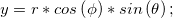

を使用し、方位角として
を使用し、方位角として を使用することがわかります。
を使用することがわかります。
このチュートリアルでは、球面座標データの3Dグラフの作成に関わる操作と、Xファンクションsph2cart を使用して球面座標から直交座標のワークブックや行列に変換する方法を紹介します。
sph2cartの変換アルゴリズムを確認すると、Originは変換式の中で、仰角としてを使用し、方位角としてを使用することがわかります。
 \ast cos \left ( \theta \right );")

Originは、仮想行列(特別な座標形式)内のデータで曲面グラフを作図でき、カラーマップを追加できます。以下の操作で、カラーマップ曲面の楕円体を作図します。
このチュートリアルは、チュートリアルデータプロジェクト（<Origin EXE フォルダ>\Samples\TutorialData.opj）と関連しています。
方位角と仰角は、 |

Originは球面座標の曲面関数を構成することができます。方位角、仰角、半径は異なる行列に配置されます。以下のステップでは、3つの行列を使用して複数曲面図を作成する方法と、sph2cartを使用してXYZに変換する方法を紹介します。
 に設定し、OKをクリックします。
に設定し、OKをクリックします。
pi/32*(i-17) ![Col(i,j)=\begin{cases}
1 & \text{ if } i\in [1,32] \\
0.7 & \text{ if } i\in [33,65] \\
0.4& \text{ if } i\in [66,98] \\
\end{cases}](../images/Convert_Data_from_Spherical_Coordinate_to_XYZ_and_Make_a_3D_Plot/math-7abab8c0325b08ec55387a3771b2aee6.png "Col(i,j)=\begin{cases}
1 & \text{ if } i\in [1,32] \\
0.7 & \text{ if } i\in [33,65] \\
0.4& \text{ if } i\in [66,98] \\
\end{cases}")
1*(j<33)+0.7*(j>33&&j<66)+0.4*(j>66)
Originでは、不等間隔なXYZ列データ(球面座標)で3Dの曲線を作成できます。以下の操作で、球の形状のらせんを作図します。
 からまでの値をセットするために、列を右クリックして、メニューから列値の一律設定：数値のセットを選択します。
からまでの値をセットするために、列を右クリックして、メニューから列値の一律設定：数値のセットを選択します。

新しく作成されたXYZデータのXYZ列を選択し、作図：3D：3Dカラーマップ曲面から3D曲面図を作図することもできます。
XとYの方位角、仰角は、 |
 の範囲は-90から90です。
角度の単位には度を使用します。
の範囲は-90から90です。
角度の単位には度を使用します。 ") 空間に偏在できます。
空間に偏在できます。  \right |\; \; (1)")
cos(2\theta )")